.png)

1. Le service
- c’est l’équipe qui a gagné l’échange qui sert.
- le service se fait après le signal de l’arbitre (geste et coup de sifflet).
- le service se fait derrière la ligne arrière, sans marcher dessus.
- le service doit être effectué dans les 8 secondes après le coup de sifflet.
- Au service, une fois la balle lancée, il y a obligation de la frapper : la rattraper ou la laisser rebondir
est une faute.
- un service ne peut pas être contré (= touché par un joueur adversaire au dessus de la bande
horizontale du filet, pieds au sol ou non).
2. Le gain d’un set et d’un match.
- Les sets doivent être gagnés avec 2 points d’écart (en général 25 points ou 15 points pour le jeu
décisif).
3. Les limites du terrain
- les lignes font partie du terrain et donc une balle qui touche une ligne est bonne.
- pénétration : toucher le terrain de jeu de l'adversaire avec le(s) pied(s) est autorisé pour autant que la
partie du (des) pied(s) reste en contact avec la ligne centrale ou directement au-dessus de celle-ci.
- Le contact du filet entre les antennes par un joueur, au cours de l'action de jouer le ballon, est une
faute ; l'action de jouer le ballon comprend (entre autres) le départ ou l'envol, la frappe (ou sa
tentative) et la reprise de contact avec le sol..
- Un joueur qui touche involontairement le filet en dehors de l’action de jouer n’est pas sanctionné.
- la balle peut toucher le filet au service ou en jeu.
- les antennes prolongent la délimitation du terrain au dessus du filet, la balle doit passer à l’intérieur
des antennes, sans les toucher.
- la ligne des 3 mètres détermine une zone avant et une zone arrière. Cela aura une incidence sur les
attaques possibles en fonction de la position des joueurs (voir n°6, les frappes d’attaque)
4. les touches de balle
- la balle peut toucher n’importe quelle partie du corps.
- la balle ne doit être ni tenue ni lancée.
- un joueur ne peut toucher la balle deux fois consécutivement, le contre ne compte pas comme touche
de balle.
- une équipe ne peut toucher la balle plus de 3 fois, le contre ne compte pas comme touche de balle.
- A la première touche de l’équipe, le ballon peut toucher consécutivement plusieurs parties du corps à
condition que ces contacts aient lieu au cours de la même action (par exemple poitrine-bras).
- les manchettes doivent se faire mains tenues.
- la frappe à une main ne peut se faire avec la paume (= tenu ou collé): frappe soit dos de la main, soit
avec le poing.
- un joueur a le droit de sortir de l’aire de jeu pour aller jouer un ballon.
5. Position des postes des joueurs
Les 3 joueurs placés le long du filet sont les AVANTS. Ils occupent respectivement :
- La position 4 Joueur Avant Gauche
- La position 3 Joueur Avant Centre
- La position 2 Joueur Avant Droit
6. Le contre (balle d’interception touchée au dessus du filet)
- seuls les joueurs avant peuvent contrer la balle.
- les mains ou les bras du (ou des) contreur(s) peuvent passer de l’autre côté du filet à condition de ne
pas gêner l’attaquant.
- on ne peut contrer qu’une frappe d’attaque, pas une passe d’un adversaire à son partenaire.
- Rappel : on ne peut contrer un service, c'est-à-dire renvoyer directement la balle du service chez
l’adversaire en la touchant au dessus du filet.
La VGA Volley, c’est 270 adhérents avec une école de volley, 8 équipes « jeunes », 5 équipes séniors, 2 équipes loisirs compétition, 3 équipes vétérans et une section loisirs.
Mais, au-delà de la compétition, la section a toujours eu à cœur depuis sa création de créer un esprit club et d’appartenance en multipliant les activités telles que tournois internes intergénérationnels, stages de formation et moments de festivité.
Cette dynamique est le fruit d’engagements forts des bénévoles et des encadrants ayant souhaité transmettre leur passion à de nombreux jeunes et moins jeunes sportifs.
L'équip M18 masculin est dans le chiampionat de la régional argent, et passe bientot le quatrieme tour de coupe de France
Le volleyball, un sport dynamique et captivant, a une histoire qui remonte à la fin du XIXe siècle. Son invention est généralement attribuée à William G. Morgan, un instructeur sportif américain, qui cherchait à créer une activité physique moins intense que le basketball, mais tout aussi stimulante. En 1895, Morgan met en place les bases du volleyball dans le gymnase de l'Association chrétienne des jeunes (YMCA) à Holyoke, dans le Massachusetts. Au départ, le jeu était appelé le "mintonette", mais rapidement, le nom a été changé en "volleyball" en raison de la nature du jeu où la balle est "volleyée" d'un côté à l'autre du filet. Le volleyball a rapidement gagné en popularité aux États-Unis et s'est répandu dans le monde entier au cours des premières décennies du XXe siècle. Les règles du jeu ont été formalisées, et le premier championnat national de volleyballl a eu lieu aux États-Unis en 1922. Le sport a également trouvé un terrain fertile dans les milieux éducatifs, en particulier dans les écoles et les collèges. En 1947, la Fédération internationale de volleyball (FIVB) a été fondée, marquant une étape importante dans la promotion et la normalisation du volleyball à l'échelle mondiale. Depuis lors, le volleyball a été inclus dans les Jeux olympiques, avec la première compétition masculine en 1964 et la compétition féminine en 1964. Le sport a continué à évoluer avec l'introduction de nouvelles règles, notamment l'ajout du rallye point system en 1998, contribuant à rendre le jeu encore plus dynamique et compétitif. Aujourd'hui, le volleyball est pratiqué à travers le monde, avec des ligues professionnelles, des tournois internationaux majeurs, et des millions de joueurs de tous âges qui apprécient ce sport pour son mélange unique d'agilité, de stratégie et d'esprit d'équipe. L'histoire du volleyball témoigne de son parcours remarquable, passant d'un jeu inventé dans un gymnase à une discipline mondiale qui rassemble des athlètes et des passionnés de tous horizons.